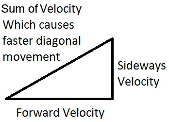
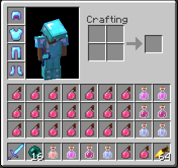

Tips and Techniques
During Minecraft PVP, there are many different techniques you can apply to help gain an advantage over your opponent. These can range from simply clicking as fast as you can, to advanced things like Comboing.
Clicking
Although players can only take damage every 0.5 seconds, clicking as fast as you can, can compensate for having bad aim and may allow you to hit your opponent before they get a chance to hit you. But Minecraft can only handle up to 10 clicks per second, so anything over that will be wasted. A technique called Jitter Clicking can be used to reach 10 clicks per second.
Jitter Clicking
Jitter clicking is a way of clicking which uses the muscles in your arm to make your hand jitter. Using the technique, you can reach up to 13 clicks a second, but if you choose to apply the technique, I advise that you do not do it very often or for long periods of time.
Sprinting
While in pvp always sprint. Sprinting will help get you to your opponent quicker than normal running and will knock them back a bit more than usual. The only time I would recommend normal running over sprinting is when they are stationary and you want to stay close to them, or when you want to minimise knockback on your opponent.
Block hitting
Block hitting can be performed by alternating between clicking the left mouse button and the right mouse button. This can help reduce damage intake, as blocking reduces the damage you take by half. The technique is best used if you are low on health and are taking your opponent head on.
Other properties of block hitting are that it can be used to knock your opponent back more than a normal hit would and countering a combo attack.
Strafing/Circling
Strafing or circling your opponent is very, very helpful because a moving target is much harder to hit than a stationary one. Circling is especially useful if your opponent has a mouse with low sensitivity or is using a track pad because when you are moving around them, they have to constantly move their cursor to keep up with you.
Jump when sprinting
Jumping while sprinting will allow you to go faster, especially if you have the slowness effect. The only times when jumping is slower, is when you have a speed 2 effect.
Sprint diagonally with speed 2
In order to gain more speed, while effected by speed 2 or greater, you can sprint diagonally. I think this works by adding the forward velocity to the sideways velocity, using Pythagoras; as shown in the diagram below.

Jump when drinking potions or eating
If you get hit while drinking a potion or eating, you can't move and are therefore vulnerable, but if you jump, you are able to get knocked away from your opponent when they hit you, which will reduce the amount of damage you receive while eating/drinking.
Run towards your potion when you throw it
The closer to your splash potion after it has been thrown, the more effect it will have on you and if you score a direct hit, you will gain the most you can from the potion. With speed II, you are able to run into the potion as it is flying through the air, which will result in a direct hit. This can be much better than just throwing it at the ground.
Perform criticals when opponent's armour breaks
When a piece of your opponent's armour breaks, constantly hit them with critical attacks. If you are using a sharp 5 sword, this will most likely kill them. Even if your opponent has eaten an enchanted golden apple, the regeneration IV effect from it may not be able to regenerate health fast enough.
Comboing
A combo is when you hit your opponent, but they are un-able to hit you. This is usually done by strafing, clicking fast or tapping your W key, so that your opponent is in your hit range, but you are not in your opponents. It is one of the hardest techniques because it requires very good aim, combined with those skills, but once you master it, you will be very hard to beat in a fight.
Use knockback to your advantage when you need to refill your hotbar
When empty your hotbar of your method of healing (health potions or soup), you need to take the items from your inventory and place them in your hotbar. This can be hard do to when you're under attack, so when you need to refill, run backwards from your opponent and jump when they hit you. You will be sent flying back, which may give you enough time to refill your hotbar and get back to the battle.
Inventory Management
My typical inventory set up looks like this.

Armour
The best armour to bring to battle is Protection 4, Unbreaking 3, Diamond armour. It offers the best damage resistance rating out of all of the armour.
Potions
Potions can be a game changer in pvp. The best ones to use are fire resistance ext, regeneration ext, strength II, speed II and splash health II. The most important potions in my opinion are strength, speed and splash health. When I go pvping, I always lay out the potions in my inventory as they are in the picture above.